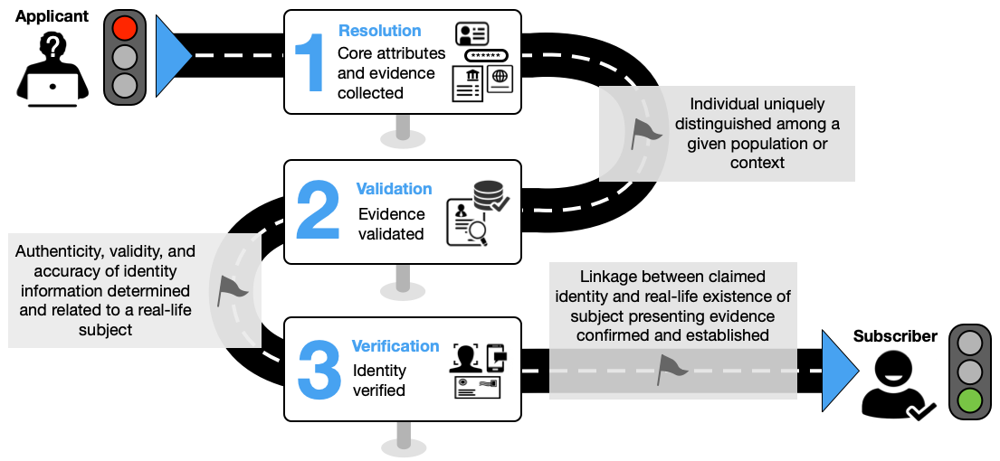

Tue, 26 Aug 2025 08:51:12 -0500
このガイドラインは、デジタル認証で使用するための ID 証明と登録に焦点を当てています。本人確認のプロセス中に、申請者は自分自身を確実に識別できる証拠をクレデンシャル サービス プロバイダー (CSP) に提供し、それによって CSP が有用な ID 保証レベルでその ID を主張できるようにします。このドキュメントでは、3 つの ID 保証レベルのそれぞれの技術要件を定義します。このガイドラインは、この目的外の標準の開発または使用を制限することを意図したものではありません。この出版物は、NIST Special Publication (SP) 800-63A に取って代わります。
認証;クレデンシャルサービスプロバイダー。デジタル認証;身元証明;フェデレーション。
このドキュメントと関連する付属のボリューム ([SP800-63]、[SP800-63B]、および [SP800-63C] ) は、指定されたレベルの保証でデジタル ID を管理するためのプロセスとテクノロジーに関するガイダンスを組織に提供します。
この文書では、個人を ID サービスに登録したり、オンライン リソースへのアクセスを提供したりする目的で、各 ID 保証レベル (IAL) で個人の ID 証明の要件を提供します。これは、ネットワーク上または対面での個人の身元証明に適用されます。
このセクションは有益です。
オンラインサービスを提供する際の課題の1つは、一連のアクティビティを1人の既知の個人に関連付けることができることです。現実の主題との関連性を確実に確立することが重要な状況には、機密性の高い政府サービスへのアクセス、金融取引の実行、規制で要求される場合(金融業界の顧客識別プログラムの要件など)、リスクの高い行動に対する説明責任を確立する必要がある場合(ダムからの放水率の変更など)が含まれます。
これらのガイドラインでは、身元証明を、オンラインサービスにアクセスする被験者と現実の人物との間にある程度の保証を得る関係を確立するプロセスとして定義しています。このドキュメントでは、「サブジェクト」および「個人」という用語は、自然人のみを指し、非個人のエンティティ、組織、または物を指すものではありません。このドキュメントは、連邦政府機関、サードパーティのクレデンシャルサービスプロバイダー(CSP)、およびID証明サービスを提供または使用するその他の組織向けのガイダンスを提供します。
ID 証明の期待される結果は次のとおりです。
本人確認サービスには、プライバシー強化の原則 (データの最小化など) が組み込まれており、期待される結果を達成しながら申請者の負担を最小限に抑えるために、優れたユーザビリティ プラクティスが採用されることが期待されています。
加入者の ID の保証 (信頼度) は、これらのガイドラインで定義されている ID 保証レベル (IAL) に関連するプロセスを使用して確立されます。連続する各 IAL は、保証を強化するために、より低い IAL の要件に基づいて構築されます。
本人確認なし: 申請者を特定の実在の人物に関連付ける必要はありません。証拠の収集は必要ありません。属性は検証される場合と検証されない場合があります。本人確認は行われません。これにより、属性が他のビジネスプロセスの一部として検証されることが除外されるわけではありませんが、アクセスに属性の検証は必要ありません。
IAL1: ID 証明プロセスは、要求された ID の現実世界の存在をサポートし、申請者がその ID に関連付けられていることをある程度保証します。コア属性は、身元証拠から取得されるか、申請者が自己主張します。すべてのコア属性 (セクション 2.2 を参照) は、権威あるまたは信頼できる情報源に対して検証され、属性が本人確認プロセスを受ける人物に関連付けられていることを確認するための手順が講じられます。本人確認は、CSP担当者の立ち会いの有無にかかわらず、リモートまたはオンサイトのプロセスを使用して実行されます。本人確認が正常に完了すると、申請者は加入者アカウントに登録され、加入者提供の認証者を含むすべての認証者をアカウントにバインドできます。IAL1 は、拡張性の高い攻撃 (自動登録攻撃など) を制限し、侵害された個人情報を使用した合成 ID や攻撃から保護するように設計されています。
IAL2: IAL2 では、追加の証拠を収集し、申請者が提示された証拠の正当な所有者であることを確認するための強化されたプロセスを含む、証拠を検証し、身元を確認するためのより厳格なプロセスが必要です。IAL1と同様に、IAL2でのID証明は、CSP担当者の立ち会いの有無にかかわらず、リモートまたはオンサイトのプロセスを使用して実行できます。IAL1 で対処される脅威に加えて、IAL2 は、大規模で標的型の攻撃を制限し、基本的な証拠の改ざん、証拠の盗難、ソーシャル エンジニアリング戦術から保護するように設計されています。
IAL3: IAL3 は、訓練を受けた CSP 担当者 (つまり、校正エージェント) が、オンサイト出席の ID 証明セッションの一環として申請者と直接対話し、少なくとも 1 つの生体認証特性を収集するための要件を追加します。オンサイトでの ID 証明セッションが成功すると、申請者が加入者アカウントに登録され、そのアカウントにバインドされた 1 つ以上の認証者が配信されます。IAL3 は、より高度な攻撃を制限し、高度な証拠の改ざん、盗難、否認、およびより高度なソーシャル エンジニアリング戦術から保護するように設計されています。
\clearpage
このガイドラインでは、テキストで次のタイポグラフィ規則を使用します。
この文書は次のように構成されています。各セクションには、規範的 (つまり、コンプライアンスのために必須) または有益 (つまり、必須ではない) のいずれかとしてラベル付けされています。
このセクションは規範的です。
このセクションでは、本人確認と登録プロセスの概要と、申請者が主張した本人確認の解決、検証、検証をサポートするための要件について説明します。また、ID 証明プロセスの追加の側面に関するガイドラインも提供します。これらの要件は、要求された ID が現実世界に存在し、申請者がその ID に関連付けられた個人であることを確認することを目的としています。
これらのガイドラインでは、解決、検証、検証を実現するための複数の方法と、ID 証明プロセスをサポートする複数の種類の ID 証拠が提供されています。CSPと組織は、さまざまな手段、能力、およびテクノロジーを持つ申請者のアクセスを促進するために、ID証明サービスとプロセスを実装する際にオプションを提供するべきです(SHOULD)。これらのオプションには、複数のタイプと組み合わせの身元証明の受け入れ、複数のデータ検証ソースのサポート、身元を検証するための複数の方法の有効化、複数の身元証明タイプの提供、および申請者に対する例外処理の提供(例:信頼できる査読者、申請者の参照)が含まれるべきです(SHOULD)。
CSPは、提供される各ID証明オプション(ID証明の種類、検証ソース、支援メカニズムなど)に関連するリスクを評価し、必要に応じて不正行為を軽減するための制御を実装するものとします。少なくとも、CSPは、各オプションが総合的に同等の保証を提供するように設計するものとします(SHOULD)。
要件は通常、特に明記されていない限り、CSP の責任としてこれらのガイドラインで表現されます。CSP 要件は、単一のエンティティによって実行される場合もあれば、すべての CSP の責任が果たされるように複数のコンポーネント サービスを含める場合もあります。
身元証明の目的は、身元証明プロセスに関与する申請者が、記載されたレベルの信頼度で本人であることを確認することです。この文書は、CSPが指定された保証レベルで申請者を身元証明するための3段階のプロセスを提示します。最初のステップは ID 解決であり、申請者が CSP がサービスを提供する母集団の一意の ID であり、実在の人物であるかどうかを判断するために、適切な ID 証拠と属性情報を収集することで構成されます。2 番目のステップは ID 検証で、最初のステップで収集された証拠と属性情報の信憑性、正確性、妥当性を確認します。3 番目のステップは本人確認で、身元証拠を提示する申請者が証拠が発行されたのと同じ個人であることを確認します。ほとんどの場合、指定された IAM に対する申請者の ID 証明に成功すると、CSP は申請者 (現在は ID サービスのサブスクライバー) の一意のサブスクライバー アカウントを確立し、1 つ以上のオーセンティケーターをアカウント内の証明済み ID にバインドできるようにします。
ID 証明は、福利厚生またはサービスへの適合性または資格を判断するための組織のビジネス プロセスの一部にすることができますが、そのような決定はこれらのガイドラインの範囲外です。
このサブセクションは有益です。
図 1 は、3 段階の ID 証明プロセスの例を示しています。

次の手順は、リモート無人 ID 証明の一般的なワークフローの例を示しており、規範的な処理ワークフロー モデルを表すことを意図したものではありません。
解決
検証
検証
在籍
3つのID証明ステップが正常に完了すると、証明の通知が検証済みのアドレスに送信され、申請者は第5節で説明されているように、CSPの加入者アカウントに登録できます。加入者アカウントには、加入者とアカウントについて通信するために使用できる検証済み住所(電話番号、郵送先住所など)が少なくとも1つ含まれています。さらに、1つ以上の認証者が加入者アカウントの証明されたIDにバインドされます。
校正プロセス内で、個人ごとに異なる役割を果たすことができます。これらのガイドラインの一貫した実装をサポートするために、次の ID 証明ロールが定義されています。
CSPは、上記のロールのうち、IDサービスに適用できるものを特定し、第3条で規定されている要件と期待に合致するトレーニングとサポートリソースを提供するものとします。
このドキュメントでは、ID 証明の種類は、CSP が採用するテクノロジ、通信チャネル、および ID 証明ロールの組み合わせによって定義されます。ID 証明の種類は、ID 証明が行われる場所と、プロセスに CSP のエージェントが参加するかどうかという 2 つの要因に基づいて特徴付けられます。
各保証レベルの要件は、CSP が必要に応じて、さまざまな保証レベルの要件を満たすために、ID 証明タイプのさまざまな組み合わせを実装できるように構成されています。CSPは、IDサービスによってサービスを提供する母集団のニーズと、サービスを使用するRPのリスク態勢に最もよく対応するID証明タイプの組み合わせを提供するべきです(SHOULD)。
ID 証明プロセスには、解決、検証、検証を完了するために必要なものなど、ID 証明を達成するために必要な最小限の属性の提示と検証が含まれます。CSP は、セクション 3.1 で指定されているように、コア属性と見なす一連の属性を決定し、文書化します。CSP は、政府識別子を含めるものとします (SHALL shall the STATE)1また、任意のIALでのID証明のためのコア属性のセットに以下を含めるべきである(SHOULD)。
CSP と RP の要求に応じて、これらに追加の属性を追加しても構いません。CSPとRPは、信託契約および慣行に関する声明にすべてのコア属性を文書化するものとします(SHALL SHOULD)。プライバシーリスク評価に続いて、CSPは、ID証明を完了するために必要ではないが、他のRPビジネスプロセスをサポートする可能性のある追加の属性を要求してもよい(MAY)。追加の属性を要求するためのプライバシー要件の詳細については、セクション3.3を参照してください。
ID 解決には、ID 証明と、サービス対象の母集団の一意の ID を区別するために必要な最小限の ID 証拠と属性情報を CSP が収集することが含まれます。ID 解決は、潜在的な不正行為の初期検出を含む、ID 証明プロセス全体の出発点です。
ID 証拠は、主張された ID の現実世界の存在を裏付ける情報またはドキュメントです。身元証拠は、物理的 (運転免許証など) またはデジタル (モバイル運転免許証やデジタル アサーションなど) の場合があります。
身元証明の収集は、身元確認プロセスをサポートし、1)身元証明申請者によるCSPへの身元証拠の提示と、2)提示された証拠が該当する強度要件を満たしているというCSPによる判断の2つのステップで構成されます。
このセクションでは、各強度での身元証拠の要件を定義します。身元証拠の強度は、以下によって決まります。
この文書の付録 A は、強度によってグループ化された考えられる証拠タイプの非網羅的なリストを提供します。
公正と見なされるには、身元証拠は次の要件をすべて満たすものとします。
強力と見なされるためには、身元証拠は次の要件をすべて満たすものとします。
優れたものと見なされるためには、身元証拠は次の要件をすべて満たすものとします。
身元証拠の検証の目的は、収集された身元の証拠が本物で有効であることを判断することです。属性検証の目的は、すべてのコア属性の正確性を確認することです。
この文書では、「有効」という用語を使用して、証拠が有効期限が切れていたり、定められた期間外に発行されたりした場合でも、身元を証明するための有用な手段であり続けることができることを認識しています。CSP は、セクション 3.1 で説明されている CSP プラクティス ステートメントの一部として、期限切れの証拠に対処するためのポリシーを定義し、RP は、これがオンライン サービスへのアクセスに受け入れられるかどうかを判断します。
身元証拠の検証には、提示された証拠を調べて、それが本物であること (つまり、偽造または改ざんされていない)、正確であること (つまり、証拠に関する情報が正しい)、および有効であること (つまり、有効期限が切れていないか、CSP が定義した発行または有効期限内) であることを確認することが含まれます。属性の検証には、提示された証拠から得られたものか、自己主張されたものかにかかわらず、コア属性の正確性を確認することが含まれます。次のサブセクションでは、証拠と属性の検証に許容される方法を示します。
CSP は、次のことを確認することにより、提示された証拠の信憑性、正確性、および妥当性を検証するものとします (SHALL SHOULD)。
提示された証拠を検証するために許容される方法は次のとおりです。
一部のデジタル証拠 (MNO/電話アカウントなど) では、視覚的または物理的に検証できる物理的な証拠がありません。信頼性は、発行者からのデジタル署名されたアサーションを検証したり、そのアカウント情報にアクセスできる属性検証サービスにクエリを実行したりするなど、発行元または信頼できるソースを使用して、そのアカウントと電話番号に関連付けられた ID 属性を検証することによって確認されます。
CSPは、身元証拠から得られたものか、申請者が自己主張したものかにかかわらず、すべてのコア属性(第2.2条)を、権威あるまたは信頼できる情報源で検証するものとします(第2.4.2.4条)。
CSP は、次の基準を満たす信頼できる情報源を使用するものとします (SHALL SHOULD)。
信頼できる情報源は、ID 証拠または属性の発行ソースであるか、発行ソースによって管理されている情報に直接アクセスできます。発行元の例としては、運転免許証データの州自動車局や社会保障カードと番号の社会保障局などがあります。発行元への直接アクセスを提供または可能にする権威ある情報源の例としては、米国自動車管理者協会の運転免許証データ検証 (DLDV) サービスがあります。
信頼できるソースは、信頼できるソースにトレースできる属性情報にアクセスできるか、複数のソースから取得した ID 属性情報を、正確性、一貫性、および最新性について相関関係があるものを保持します。信頼できる情報源は規制当局の監視の対象となります(公正信用報告法など)。
本人確認の目的は、主張された検証済みの身元と、指定されたレベルの信頼度で身元証明プロセスに従事する実際の申請者との間のリンクを確立することです。言い換えれば、検証は、証拠を提示する申請者がその証拠の正当な所有者であることを保証するものです。
CSPは、以下の方法の1つ以上を通じて、請求された身元と本人確認プロセスに従事する申請者との関連性を確認するものとします。
ナレッジベース検証(KBV)またはナレッジベース認証は、本人確認に使用してはなりません。
政府識別子は、政府の記録 (社会保障番号、運転免許証番号、パスポート番号など) で申請者に関連付けられている一意の識別子です。↩
このセクションは規範的です。
このセクションでは、各 IAM での ID 証明の要件など、ID 証明および登録サービスを運用する CSP の要件について説明します。このセクションには、連邦政府機関が独自の ID サービスを運用しているか、外部 CSP を使用しているかに関係なく、連邦政府機関に対する追加の要件も含まれています。
セクション 4.1、4.2、および 4.3 は、特定の IAM での ID 証明の要件とガイドラインを提供します。セクション 4.4 には、IAL によるこれらの要件の要約リストを表 1 に示します。
CSPは、定義されたIALを達成するために実装されるすべての本人確認プロセスを詳述する文書化された手順または慣行ステートメントに従って業務を遂行するものとします(SHALL SHOULD)。これらの文書化された手順には、少なくとも以下が含まれます。
CSPは、文書化された手順またはプラクティスステートメントを、IDサービスを使用するRPが利用できるようにするものとします(SHOULD)。CSPは、文書化された手順またはプラクティスステートメントの要約版を公開すべきです(SHOULD)。
SP 800-63C では、信頼契約を使用して、フェデレーション関係における ID プロバイダー(IdP)、CSP、および RP 間の要件を定義する方法について説明します。CSP プラクティス ステートメントは、これらの契約に直接含めても構いません (MAY)。
ID 証明プロセスの重要な側面は、ID 管理システムによって保護されている特典、サービス、データ、または資産にアクセスしようとする不正な試みを軽減することです。解決、検証、検証のプロセスは、多くの種類の攻撃を軽減するように設計されています。ただし、脅威環境が絶えず変化する中で、追加のチェックと制御を階層化することで、証明された ID の信頼性を高め、高度で新しいタイプの攻撃に対する追加の保護を提供できます。潜在的な不正行為のインスタンスを特定、検出、解決する機能は、CSP と RP にとって重要な機能です。
ID サービスの一部として人工知能(AI)または機械学習(ML)を採用する CSP は、該当する場合、[SP800-63] の第 3.8 条に規定される要件を遵守するものとします。
不正チェックと軽減テクノロジーの有効性は、使用されるデータソース、使用されるテクノロジー、そしておそらく最も重要な申請者集団など、多くの要因によって異なります。したがって、不正管理対策から生じる障害に対処する、適切に構造化され、文書化されたプロセスを持つことが重要です。これらの障害の処理には、次の要件が適用されます。
次のプライバシー要件は、任意の IAL で ID サービスを提供するすべての CSP に適用されます。
CSPは、IDサービスの要素を評価して、サービスを提供する人々のカスタマーエクスペリエンスの課題をもたらす可能性のあるプロセスとテクノロジーを特定します。顧客体験に対するリスクが特定された場合、CSPは、保証レベルとリスク態勢に合致したこれらの問題を軽減または排除する緩和策を積極的に採用します。
次の要件は、任意の IAM で ID サービスを提供するすべての CSP に適用されます。
救済の詳細については、[SP800-63]の第3.6節を参照してください。
次の要件は、連邦政府機関が独自の ID サービスを運用しているか、ID サービスの一部として外部 CSP を使用しているかに関係なく、連邦政府機関に適用されます。
このセクションには、確認コードの使用をサポートする CSP の要件が含まれています。
確認コードは、申請者が将来の通信の目的で住所、電子メール アドレス、または電話番号にアクセスできることを確認するために使用されます。郵便番号または電話番号の住所に配信された確認コードは、第4.1.6項および第4.2.6項で説明されているように、IAL1および2で本人確認オプションとしても使用できます。
これらの目的に使用される確認コードには、承認されたランダムビットジェネレータからの少なくとも10進数6桁(または同等の数字)が含まれているものとします([SP800-63B]のセクション3.2.12を参照)。確認コードは、手動入力用の数値または印刷可能なASCII表現、確認コードの表現を含む安全な(例えば、https)リンク、または確認コードを含む機械可読光学ラベル(例えば、QRコード)として提示されてもよい。
確認コードは、最大で次の期間有効であるものとします。
使用時に、CSPは確認コードを無効にするものとします(SHALL SHALL SHOULD)。
継続コードは、不完全な本人確認または登録プロセスへの申請者のリンクを再確立するために使用されます。継続コードは、あるセッションを別のセッションに接続できる一時的なシークレットを提供します。一般的なシナリオでは、申請者がオンラインで本人確認プロセスを開始するが (リモート無人など)、対面 (オンサイト出席など) イベントを通じて完了する必要があります。このオンサイト サービスは、多くの場合、サードパーティによって、または確立された CSP 発行の認証子による申請者の認証をサポートするテクノロジーを持たないチャネルを通じて提供されます。申請者が ID 証明プロセスのすべてのステップで確立された認証システムを活用できる場合は、継続コードは必要ありません。
そのため、申請者が 1 回のセッションで ID 証明を正常に行い、CSP の ID サービスに登録するために必要なすべての手順を完了できない場合、特に異なる ID 証明タイプを切り替える場合、CSP は継続コードを使用しても構いません (MAY)。継続コードは、オフラインで維持され (印刷または書き留められるなど)、以前の未完了のセッションへのリンクを再確立するために申請者が安全な場所に保存することを目的としています。CSPとの後続のセッションへの申請者の認証を容易にするために、CSPはまず、最初のセッションの停止前に申請者のために確立されたレコードまたはアカウントに認証者をバインドすべきである(SHOULD)。
継続コードを使用する場合は、次の要件が適用されます。
申請者が継続コードを受け取ってから校正プロセスを完了できるようになるまでにかなりの時間が経過する可能性があるため、これらのガイドラインでは有効期限は定義されていません。これは、CSP がプロセス、テクノロジー、パートナーシップに基づいて定義する必要があります。
証明の通知は、申請者の検証済みアドレスに送信され、本人確認が正常に完了したことを通知し、本人確認イベントとその後の登録に関する情報を提供します。さらに、通知では、受信者が本人確認イベントへの関与に異議を唱える方法について説明します。
次の要件は、IALでの校正の通知に適用されます。
加入者がIDサービスによる本人確認を否認した場合、CSPまたはRPは、確立された不正管理および救済ポリシーに従って対応するものとします。
生体認証とは、顔の特徴、指紋、音声パターン、キーストロークパターン、スマートフォンの持ち方、画面の圧力、タイピング速度、マウスの動き、歩行などの生物学的および行動的特徴に基づいて個人を自動的に認識することを指します。これらのガイドラインで使用される生体認証データとは、他のアプリケーションまたはサービスパートナーへの生体認証データの送信を含む、取得、保存、または処理のあらゆる段階における生物学的および行動的特徴のアナログまたはデジタル表現を指します。これには、申請者からのライブ生体認証サンプル (顔画像、指紋など) と、証拠から得られた生体認証参照 (運転免許証の顔画像、身分証明書の指紋の詳細テンプレートなど) が含まれます。ID 証明プロセスに適用されるように、CSP は生体認証を使用して、個人が ID 証拠の正当な対象であることを確認したり、個人を新しい ID 証拠または資格情報にバインドしたり、重複排除の目的で行うことができます。これらの要件は、身元証明プロセスでの生体認証の使用に関連する追加のプライバシーへの影響にも対処します。
次の要件は、ID 証明プロセスの一環として生体認証を採用する CSP に適用されます。
\clearpage
申請者から生体認証特性を収集するCSPには、次の要件が適用されます。
本人確認をサポートする校正エージェントと信頼できる査読者は、提示された証拠の顔の肖像画を、その証拠に表された身元を主張する申請者と比較できる必要があります。そのため、CSPがこの視覚的な顔画像比較を検証オプションとして提供する場合、次の要件が適用されます。
物的証拠の検証は、光学キャプチャと検査(文書認証または「文書認証」と呼ばれることが多い)によって、または訓練を受けた校正エージェントまたは信頼できる審判による目視検査によって実施できます。CSP は、どちらかまたは両方のプロセスを使用して、身元証拠の信頼性を評価できます。
次の要件は、文書の信頼性を判断する目的で光学キャプチャと検査を採用する CSP に適用されます。
これらの要件は、物理的な ID 証拠の画像をキャプチャして検証するテクノロジに適用されます。これらは、証拠自体に組み込まれているPKIまたはその他の暗号化技術に依存する検証手法には適用されません。
次の要件は、文書の信頼性を判断する目的で、訓練を受けた校正エージェントまたは信頼できる審判による証拠の目視検査を採用するCSPに適用されます。
身元証拠の数と順列が異なる可能性があるため、これらのガイドラインはセキュリティ機能の包括的なリストを提供しようとはしていません。CSP は、受け入れる ID 証拠の種類に固有の証拠検証トレーニングを提供する必要があります。
有人型と無人型の両方のリモートID証明プロセスに対する新たな攻撃の多くは、デジタルインジェクション攻撃と、ますます効果的で利用可能な生成AIツールを組み合わせています。これらの AI ツールは、申請者の画像やビデオ、証拠 (ディープフェイクなど) を含むメディアを作成または変更し、校正エージェントによって行われる自動文書検証プロセス、生体認証操作、視覚的比較を無効にするために使用されます。インジェクション攻撃は、キャプチャポイント(デバイスなど)と、比較やその他の操作を行う要素(アルゴリズムを実行するサーバー、プルーフィングエージェントが使用するワークステーションなど)の間に、改変または偽造されたメディアを挿入します。
攻撃がリモートの光学キャプチャおよび検査コンポーネント、自動化された生体認証メカニズム、またはリモート有人プロセスで使用されるビデオシステムに対する攻撃のいずれであっても、あらゆる種類のリモートIDプルーフは、何らかの形でこれらの形式の攻撃に対して脆弱です。
キャプチャされたサンプルを使用して生体認証比較を実行しても、これらの攻撃を防ぐことはできません。ただし、ライブドキュメントキャプチャとプレゼンテーション攻撃の検出メカニズムは、実行可能な偽造メディアの挿入をより困難にすることで、インジェクションおよび偽造メディア攻撃からある程度の保護を提供します。メディアは、申請者エンドポイントと CSP 比較コンポーネント間の通信チャネルに挿入する必要があるだけでなく、偽造されたメディアは、CSP によって実装された受動的または能動的なプレゼンテーション攻撃検出メカニズムを十分に打ち負かす必要もあります。ただし、これらのメカニズムでさえ、この種の攻撃の考えられるすべてのケースに対処するには十分ではありません。
次の要件は、証拠検証、リモート生体認証キャプチャ、およびビデオセッションに光学キャプチャおよび認識ツールを使用するすべてのリモートID証明プロセス(つまり、無人および有人)に適用されます。
次の追加要件は、リモート有人コレクションのシナリオに適用されます。
本人確認プロセス全体を通じて、エラーや障害が発生する可能性のあるポイントが数多くあります。標準的な本人確認ワークフローのこのような例外には、プロセスの失敗(ユーザーが必要な証拠を所有していない場合など)、技術的な失敗(統合サービスが利用できない場合など)、およびユーザーエラーによる失敗(申請者がリモート検証ツールを使用して身元証拠の鮮明な画像をキャプチャできない場合など)が含まれます。
ID 証明サービスのアクセシビリティを高め、顧客エクスペリエンスの課題に対処するために、CSP は、エラーの処理と例外の処理に関する運用プロセスを文書化するものとします。これらの文書化されたプロセスには、IAL 1 および 2 の要件を満たすことができない申請者をサポートするための信頼できる審査員の提供が含まれるべきです (SHOULD)。さらに、CSPは、申請者の属性、条件、または身元を保証できる申請者参照の使用を支持すべきです(SHOULD)。
信頼できる査読者は、特定の IAL の通常の身元証明プロセスを使用して身元を証明できない個人の身元証明と登録を容易にすることにより、オンライン サービスへのアクセスを増やすために使用されます。信頼できる審判の支援を必要とする可能性のある個人の例の非網羅的なリストには、必要な身元証拠を所持していない人、または取得できない人、障害のある人、高齢者、ホームレスを経験している人、オンラインサービスまたはコンピューティングデバイスへのアクセスが制限されている人、銀行口座がない人、または信用履歴が限られている人、 個人情報の盗難の被害者、自然災害によって避難または影響を受けた個人、および18歳未満の子供。信頼された審査員は、CSP、サード パーティ、または RP によって提供できます。信頼できる審査員が使用される場合は、次の要件が適用されます。
信頼できる審判は、他の手段で身元証明を完了できない人に重要な道を提供します。ただし、校正プロセス内で発生する可能性のある障害の数を考慮すると、CSPは、信頼できるレフリーを自社のサービス提供内で適用できる用途を定義することが不可欠です。信頼できる査読者を ID 証明プロセスに統合する定義には、次の要件が適用されます。
申請者紹介とは、申請者の身元証明、属性、または本人確認を完了する申請者の能力に関連する状況を保証するために、申請者の身元証明に参加する個人です。申請者の参照は、CSPの代理人ではなく、他の形式の証拠、検証、および検証が利用できない場合に、本人確認の完了を支援するのに十分な知識を持つ申請者の代表者です。
IAL1またはIAL2で申請者の紹介がサポートされている場合、次の要件が適用されます。
申請者の参照は、CSPおよびRPサービスの状況とコンテキストに応じて、本人確認プロセスで申請者をサポートするためにいくつかの異なるアクションを取ることができます。CSPは、オンラインサービスへのリスクが許す場合、申請者の参照の使用を提供するべきです(SHOULD)。CSPが申請者の参照の使用を許可する場合、CSPおよびそのサービスを使用するRPは、契約または信託契約において、申請者の参照の許容されるすべての使用を文書化するものとします(SHOULD)。
この情報は、身元証明イベントに関連するリスク判断をサポートすることを目的としています。ステータスまたは給付金の適格性を確立するための申請者の参照ステートメントの使用は、これらのガイドラインの範囲外です。
すべての場合において、CSPは、申請者がプロセスで果たした役割の記録を確立し、適用される法的および規制上の要件をサポートするのに十分なこれらの行動を文書化するものとします。これには以下が含まれる場合があります。
CSPは、申請者参照としての参加から生じる可能性のある法的および責任の影響に関する明確で理解しやすい情報を申請者参照に提供するものとします(SHOULD)。
多くの場合、申請者と申請者の紹介者との関係を確認するには、ビジネス上、法律上、または詐欺防止上の理由があります。リスク評価によってそのような手順が必要であると判断された場合は、次の要件が適用されるものとします。
次の要件は、18 歳未満の人に本人確認サービスを提供するすべての CSP に適用されます。
CSP は、加入者が加入者アカウントに関連する IAM を昇格させて、RP とのより高い保証トランザクションをサポートできるようにすべきです (SHOULD)。これらの機能をサポートする CSP には、次の要件が適用されます。
これは「データウォッシング」と呼ばれることが多く、通常、攻撃者が盗んだ属性情報を操作またはクリーンアップして、不正検出システムを引き起こす可能性のある不整合や危険信号を削除して正当であるか見せかけたときに発生します。データウォッシュは、CSP によって展開されるインターフェイスに応じて、さまざまな方法で防止できます。そのため、これらのガイドラインは、この慣行を防ぐための特定のメカニズムを規定するものではありません。↩
プライバシーリスク評価の詳細については、https://nvlpubs.nist.gov/nistpubs/CSWP/NIST.CSWP.01162020.pdf の「NIST Privacy Framework: A Tool for Improving Privacy through Enterprise Risk Management」を参照してください。↩
[NISTIR8062] では、予測可能性、管理性、および非関連付け可能性の概要と、これらの目標を達成する方法の例を示します。↩
このコンテキストでの行動分析は、インタラクションが自動攻撃を示しているかどうか、およびそのユーザーのキャプチャされた参照テンプレートに基づいて特定のユーザーを識別または認証する取り組みではないかどうかを判断するために使用されます。↩
SORN の詳細については、「OPM の System of Records Notice (SORN) ガイド (https://www.opm.gov/information-management/privacy-policy/privacy-references/sornguide.pdf)」を参照してください。↩
この文書の目的上、DFAR は、文書検証システムが有効であると判断した処理された不正文書の割合を、処理された不正文書の数で割ったものです。↩
この文書の目的上、DFRR は、文書検証システムが無効と判断した処理済みの正規文書の割合を、処理された正規文書の数で割ったものです。↩
このセクションは規範的です。
IAL1のID証明プロセスでは、悪意のある攻撃者によるIDに対する不正な主張を検出するためのさまざまな許容可能な技術が可能になり、ユーザーの採用を促進し、正当なユーザーの拒否を最小限に抑え、アプリケーションの離脱を減らします。生体認証マッチングの使用 (例: 申請者の顔画像と提供された証拠に基づく顔の肖像画の自動比較) は、IAL1 ではオプションです。
IAL1 での身元証明のために、CSP は以下を収集するものとします (SHALL SHALL )。
CSP は、少なくとも 1 つの政府識別子を含むすべてのコア属性を収集するものとします (SHALL )。検証済みの証拠は、ID 属性の優先ソースです。提示された身元証拠が、CSPがコア属性と見なすすべての属性を提供しない場合、CSPは、申請者が自己主張する属性を収集しても構いません(MAY)。
提示された各証拠は、次のいずれかの方法を使用して検証されるものとします。
CSPは、次のいずれかの方法を使用して、1つの証拠の申請者の所有権を確認するものとします(MUST)。
セクション 2、3、および 4 で指定された要件を超えるリモート無人 ID 証明の追加要件はありません。
IAL1 での本人確認が正常に完了すると、CSP は、第 3.10 条に規定されているように、申請者の検証済みの住所に証明の通知を送信するものとします。
CSP の ID システムで申請者 (現在の加入者) に対して一意の加入者アカウントが確立されると、1 つ以上の認証子を加入者のアカウントに関連付ける (つまり、バインドする) ことができます。アカウント回復の必要性を最小限に抑えるために、CSP は加入者に少なくとも 2 つの個別の認証手段をバインドすることを奨励すべきです (SHOULD)。加入者アカウントの詳細については Sec. 5 を、オーセンティケーターのバインドの詳細については [SP800-63B] の Sec. 4.1.2.1 を参照してください。
IAL2 の ID 証明には、IAL1 に関連するなりすまし攻撃やその他の ID 証明エラーをより適切に軽減するための追加の証拠、検証、検証要件が含まれています。IAL2 は、さまざまな種類の ID 証明 (リモート無人、リモート有人など) を通じて実現でき、IAL2 での本人確認は、生体認証の使用の有無にかかわらず実現できます。このセクションでは、IAL2の結果と要件に合わせるための3つの異なる経路、IAL2検証 - 非生体認証経路、IAL2検証 - 生体認証経路、IAL2検証 - デジタル証拠経路について説明します。
IAL2 での ID 証明のために、CSP は以下を収集するものとします。
CSP は、少なくとも 1 つの政府識別子を含むすべてのコア属性を収集するものとします (SHALL )。検証済みの証拠は、ID 属性の優先ソースです。提示された身元証拠が、CSPがコア属性と見なすすべての属性を提供しない場合、CSPは、申請者が自己主張する属性を収集しても構いません(MAY)。
検証経路は、関連するポリシーと整合性を持って実装され、保護されるオンラインサービスのユースケース、母集団、脅威環境に対応するべきです(SHOULD)。CSPは、IAL2検証に複数の経路を展開すべきであり、望ましい結果を達成するために経路を組み合わせてもよい(MAY)。
複数の検証経路を提供する CSP は、IAL2 を達成するためにどの経路がたどったかを加入者レコードに記録し、アサーション、API、または信頼契約の一部としてその情報を RP が利用できるようにするものとします。非生体認証経路を使用する場合、CSP は、郵送された確認コードまたは申請者と証拠との視覚的比較が検証に使用されたかどうかをさらに記録するものとします。
IAL2 非生体認証経路は、申請者から提供された生体認証サンプルの自動比較を使用しない検証方法を提供します。この経路には、生体認証データの収集と検証 (たとえば、校正エージェントによって実行される身元証拠に含まれる顔画像との視覚的比較) が含まれる場合がありますが、そのような比較は自動ではなく手動の手段によって行われます。自動生体認証比較の使用を必要としない追加の検証方法も、セクション 4.2.6.2 で指定されたデジタル証拠経路の要件に含まれています。IAL2 でオプションとして提供されている場合、CSP は、ID サービスを使用するすべての RP に非生体認証経路の使用を通知するものとします。
確認コードを物理的なアドレスに配信することと、信頼できるソースでアドレスを検証するという要件を組み合わせることで、ID 証明プロセスに対する大規模で大規模な攻撃に対する合理的な抑止力が得られ、攻撃者の価値実現までの時間に大きな影響を与えます。このため、郵送された確認コードは、生体認証や視覚的比較が失敗した場合、または代替手段が必要な場合(たとえば、加入者のテクノロジーやサービスへのアクセスが制限されている場合)に、IAL2での身元証明のための実行可能なオプションです。このような配信方法は、側近や家族による傍受や、その他のスキーム(メール転送詐欺など)に対して依然として脆弱です。このような攻撃の可能性と影響が高いと評価する組織は、他の検証方法を提供するか、追加の緩和制御を適用する必要があります。
IAL2 デジタル エビデンス パスウェイにより、個人は、デジタル資格情報 (デジタル身分証明書と呼ばれることもあります) やデジタル アカウントなどのデジタル形式の証拠を検証プロセスの一部として使用できます。
この検証方法は、加入者制御のウォレットやスマートカードのPKI資格情報など、ローカル認証イベントを可能にする優れた証拠に対して実行可能です。これらの機能をサポートしていない優れた証拠 (ePassport など) は引き続き使用できますが、他の経路のいずれかを通じて検証する必要があります。
IAL2生体認証経路は、申請者から提供された生体認証サンプルの自動比較をサポートします。
セクション 2、3、および 4 で指定された要件を超えるリモート無人 ID 証明の追加要件はありません。
IAL2で本人確認が正常に完了すると、CSPは、第3.10条に規定されているように、申請者の検証済みの住所に証明の通知を送信するものとします(MUST)。CSP は、申請者の住所に校正の通知を送付すべきです (SHOULD)。
CSP の ID システムで申請者 (現在の加入者) に対して一意の加入者アカウントが確立されると、1 つ以上の認証子を加入者のアカウントに関連付ける (つまり、バインドする) ことができます。アカウント回復の必要性を最小限に抑えるために、CSP は加入者に少なくとも 2 つの個別の認証手段をバインドすることを奨励すべきです (SHOULD)。加入者アカウントの詳細については Sec. 5 を、オーセンティケーターのバインドの詳細については [SP800-63B] の Sec. 4.1.2.1 を参照してください。
IAL3は、IAL2で要求される手順にさらなる厳格さを加え、なりすましやその他の形態のID詐欺からIDとRPをさらに保護するために、生体認証情報の比較、収集、保持の使用を含む追加の特定のプロセスの対象となります。さらに、IAL3での身元証明は、セクション2.1.2に記載されているように、オンサイトで実行され、校正エージェントが立ち会います。
IAL3 の本人確認は、オンサイトで出席した場合にのみ提供されるものとします。プルーフエージェントは、申請者と同じ場所に配置するか、CSPが制御するキオスクまたはデバイスを介してIDプルーフセッションに参加してもよい(MAY)。
IAL3での本人確認のために、CSPは以下を収集するものとします(SHALL SHALL MUST)。
CSPは、エージェントと申請者が同じ場所(つまり、同じ部屋)にいない、プルーフィングエージェントと対話するリモート手段を提供してもよい(MAY)。たとえば、申請者は、ビデオを介してセッションにリモートで参加するプルーフエージェントを使用して、CSP制御のキオスクと対話することができます。このような場合、第4.3.7条のオンサイト有人身元証明に規定されている要件に加えて、以下の要件が適用されます。このドキュメントの以前のバージョンでは、このアプローチは監視付きリモート ID プルーフ(SRIP)と呼ばれていました。
IAL3 での本人確認が正常に完了すると、CSP は、第 3.10 条に規定されているように、申請者の検証済みの住所に証明の通知を送信するものとします。CSP は、申請者の住所に校正の通知を送付すべきです (SHOULD)。
表 1 は、各 ID 保証レベルの要件をまとめたものです。
| 過程 | IAL1 | IAL2 | IAL3 |
|---|---|---|---|
| 校正タイプ | リモート 無人 リモート 有人 オンサイト 無人 オンサイト 有人 |
IAL1と同じ | オンサイトアテンド |
| 証拠収集 | 出席者: • 1 フェア、または • 1 ストロング、または • 1 スペリア 無人: • 1 フェア、または • 1 ストロング、または • 1 スペリア |
すべてのプルーフタイプの場合: • 1 フェア + 1 ストロング、または • 2 ストロング、または • 1 スペリア |
すべてのプルーフタイプの場合: • 1 フェア + 1 ストロング、または • 2 ストロング、または • 1 スペリア |
| 属性コレクション | すべてのコア属性 | すべてのコア属性 | すべてのコア属性 + 生体認証サンプル |
| 証拠の検証 | 物的証拠: • 自動文書認証 • 目視検査 • 物理的/触覚的検査 デジタル証拠: • デジタルセキュリティ機能の尋問 |
IAL1と同じ、さらに: 優れた証拠: • デジタル署名の検証 |
IAL2と同じ |
| 属性の検証 | • 権威ある情報源または信頼できる情報源 に対するコア属性の確認• デジタル署名検証によるデジタル署名された属性の確認 |
IAL1と同じ | IAL2と同じ |
| 検証 | 4.1.6 に従って、FAIR、STRONG、または SUPERIOR 証拠の申請者の所有権を確認します。 | 4.2.6 に規定されている方法を使用して、提示されたすべての証拠の申請者の所有権を確認します。 | 4.3.6 に規定されている方法を使用して、提示されたすべての証拠の申請者の所有権を確認します。 |
このセクションは規範的です。
CSPは、登録時からアカウント閉鎖時まで、IDシステム内のアクティブなサブスクライバーごとに一意のサブスクライバーアカウントを確立し、維持するものとします。CSP は、各サブスクライバーを ID サービス内の一意の ID として記録し、そのアカウントに関連付けられているすべてのオーセンティケーターの記録を維持するために、サブスクライバー アカウントを確立します。
CSP は、各加入者アカウントに一意の識別子を割り当てるものとします (SHALL SHOULD)。識別子は、CSP のシステムによってランダムに生成され、ユーザー集団内の一意性を確保し、該当する場合は RP とのフェデレーションをサポートするのに十分な長さとエントロピーを持つべきです (SHOULD)。識別子は、[SP800-63C]と一致して、アサーションの生成におけるサブジェクト識別子として使用してもよい(MAY)。
少なくとも、CSP は、各サブスクライバー アカウントに次の情報を含めるものとします (SHOULD)。
CSPは、本人確認されていない申請者(仮名アカウントなど)の加入者アカウントを登録して確立し、そのようなステータスを加入者アカウントに記録することができます。
CSP は、加入者が加入者アカウント内の情報を認証し、アクセスする機能を提供するものとします (SHOULD)。
個人情報を含む加入者アカウントの場合、この機能は、加入者アカウントに登録されている認証システムを使用した AAL2 または AAL3 認証プロセスを通じて実現されるものとします (SHOULD)。
CSP は、加入者が加入者アカウントで情報の更新を要求する機能を提供するものとします (SHOULD)。CSP は、サブスクライバーが非コア属性を直接更新するメカニズムを提供しても構いません (MAY)。
物理アドレスを除き、CSP は、加入者アカウントで管理されているコア属性情報に対する変更を検証するものとします (SHALL SHOULD)。CSP は、加入者の物理アドレスが CSP によってコア属性と見なされる場合、加入者の物理アドレスへの変更を検証する必要があります (SHOULD)。
CSPは、加入者アカウント内の情報に加えられた更新を加入者に通知するものとします(SHALL SHOULD)。
CSPは、加入者が加入者アカウント内の情報への不正アクセスまたは侵害の可能性を報告する機能を提供するものとします(SHOULD)。
CSPは、次のいずれかが発生した場合、加入者アカウントを速やかに一時停止または終了するものとします。
CSP は、アカウントが停止または終了された場合、加入者に通知するものとします (SHOULD)。このような通知には、アカウントが停止または終了された理由、再アクティブ化または更新のオプション、およびアカウントが誤って停止または終了されたとサブスクライバーが判断した場合の救済オプションに関する情報が含まれるものとします(SHOULD)。
CSPは、その慣行に関する声明(第3.1条を参照)に記載されているように、記録の保持および廃棄の要件に従って、アカウント終了後の加入者アカウント記録からすべての個人情報を削除するものとします(SHALL SHOULD)。
CSPレコードのデータ侵害が発生した場合、CSPは、個人情報が不正アクセスにさらされた可能性のある加入者に通知を提供するものとします(MUST)。このような通知には、侵害に関する情報と、加入者がアカウントへのアクセスを回復または維持し、個人情報の不正開示から保護するために取るべき措置が含まれるものとします。CSPは、そのような通知を加入者の検証済みアドレスに可能な限り迅速に送信するものとします(SHALL SHOULD)。
一部の CSP は、さまざまなロールまたはペルソナを果たしながら、1 人のユーザーが CSP と対話する機能をサポートする必要があります。たとえば、加入者は、CSP がサポートするさまざまなサービス間で、自分自身として、またビジネスの代表として対話できます。別のシナリオは、商用 RP と連邦 RP の両方にサービスを提供し、サービス間の分離を維持する必要がある CSP です。不正行為を制限し、冗長なコストとプロセスを回避するために、CSPは、複数の加入者アカウントを作成することなく、複数のユーザーペルソナを管理する手段をユーザーに提供すべきです(SHOULD)。これが不可能で、1 人の加入者に対して複数の加入者アカウントがサポートされている場合、CSP は、同じ加入者の不必要な再校正を回避する方法(たとえば、共通の識別子を介して、または生体認証または属性解決を通じてアカウントをリンクする)で、加入者アカウントを実装すべきです (SHOULD)。
1 つのサブスクライバに対して複数のサブスクライバ アカウントが許可されている場合は、次の要件が適用されます。
RP が複数の CSP のサービスを使用する場合にも、同様のシナリオが発生する可能性があります。これはアカウントリンクと呼ばれ、[SP800-63C]のセクション3.8.1では、RP加入者アカウントと複数のCSP/IdPアカウントの関連付けについて説明しています。
このセクションは有益です。
本人確認プロセスを効果的に保護するには、特定の申請者との取引全体を通じてセキュリティ制御とプロセスを階層化する必要があります。これを達成するには、脅威がどこでどのように発生し、登録を危険にさらす可能性があるかを理解する必要があります。ID 証明プロセスに対する脅威には、次の 4 つの一般的なカテゴリがあります。
このセクションでは、なりすまし攻撃、虚偽または詐欺的な表現の脅威、ソーシャル エンジニアリング攻撃に焦点を当てます。インフラストラクチャの脅威は、従来のコンピューター セキュリティ制御 (侵入防御、記録保持、独立した監査など) によって対処され、このドキュメントの範囲外です。これらのガイドラインで提供されているもの以外の追加のセキュリティ制御については、[SP800-53]、連邦情報システムおよび組織に推奨されるセキュリティおよびプライバシー制御を参照してください。
このセクションでは、個別の脅威タイプとしての AI に具体的に対処するガイダンスやコントロールは提供しません。代わりに、以下の緩和策とこれらのガイドラインの要件は、AI ツールを使用して攻撃者によって実行または拡張される可能性のある特定の脅威 (たとえば、AI が生成した偽造文書やメディアを使用して申請者になりすます) に対処します。
| 攻撃/脅威 | 形容 | 例 |
|---|---|---|
| 自動登録試行 | 攻撃者はスクリプトと自動化されたプロセスを利用して、大量の登録を迅速に生成します | ボットは盗んだデータを利用して給付金の請求を提出します |
| 証拠の改ざん | 攻撃者が ID を主張するために証拠を作成または変更する | 偽の運転免許証が証拠として使用されます |
| 合成ID詐欺 | 攻撃者は、実在の人物に関連付けられていない ID の証拠を捏造します | クレジット ファイルを作成するために偽名で開設されたクレジット カード |
| IDの不正使用(個人情報の盗難) | 攻撃者が他人の身元または身元証拠を不正に使用する | 個人が盗まれたパスポートを使用する |
| ソーシャルエンジニアリング | 攻撃者は、正当な申請者に身元証拠を提供するか、偽りの口実で身元証明プロセスを完了するよう説得します | 個人が潜在的な雇用主を装った攻撃者に身元証拠を提出します |
| 虚偽の主張 | 攻撃者は、偽の属性または情報を正当な ID に関連付けます | 個人が州の居住者のみが利用できる給付金を得るために、州での居住を虚偽に主張する |
| ビデオまたは画像インジェクション攻撃 | 攻撃者は偽のビデオフィードを作成して実在の人物になりすます | ディープフェイクビデオは、盗まれた運転免許証に描かれている個人になりすますために使用されます |
登録および本人確認プロセスに対する脅威を表 2 にまとめます。これらの脅威の軽減に役立つ関連メカニズムを表 3 にまとめます。これらの緩和策は包括的ではなく、各 IAL でより詳細に説明され、[SP800-63] のセクション 3 に詳述されているリスク評価プロセスに基づいて適用される緩和策の要約と見なすべきです。
| 脅威/攻撃 | 緩和戦略 | 規範的参照 |
|---|---|---|
| 自動登録試行 | Web アプリケーション ファイアウォール (WAF) 制御とボット検出テクノロジー。帯域外エンゲージメント(確認コードなど)。生体認証と生体検出機構悪意のあるトラフィックの兆候を特定するためのトラフィックおよびネットワーク分析機能。 | 3.5、3.8、3.11 |
| 証拠の改ざん | 信頼できる情報源によるコア属性の検証。提示された証拠の物理的またはデジタルセキュリティ機能の検証。 | 4.1.4、4.1.5、4.2.4、4.2.5、4.3.4、4.3.5 |
| 合成ID詐欺 | 身元証拠の収集。信頼できる情報源によるコア属性の検証。申請者と検証済みの身元証拠または生体認証データとの生体認証比較。バイタル統計リポジトリ(例:死亡マスターファイル)と照合します。 | 3.2.1、4.1.2、4.1.5、4.1.6、4.2.2、4.2.5、4.2.6、4.3.2、4.3.5、4.3.6 |
| IDの不正使用(個人情報の盗難) | 申請者と検証済みの身元証拠または生体認証データとの生体認証比較。応募者の本物の存在を確認するためのプレゼンテーション攻撃検知対策。帯域外エンゲージメント(確認コードなど)と校正の通知。バイタル統計リポジトリ(例:死亡マスターファイル)と照合します。悪意のあるアカウント確立の可能性のある指標を特定するための不正、トランザクション、および行動分析機能。 | 3.2.1、3.8、3.10、3.11、4.1.6、4.2.6、4.3.6 |
| ソーシャルエンジニアリング | 強制や苦痛の兆候を特定するために信頼できる審判を訓練します。帯域外エンゲージメントと検証済みアドレスへのプルーフの通知。一般的な脅威とスキームに関する情報とエンドユーザーとのコミュニケーション。オンサイトでの対面付き身元証明オプション。 | 2.1.3、3.8、3.11、3.14、8.1.4 |
| 虚偽の主張 | 交通の地理的制限。信頼できる情報源によるコア属性の検証。 | 3.2.1、4.1.5、4.2.5、4.3.5 |
| ビデオまたは画像インジェクション攻撃 | アクティブPADとパッシブPADの組み合わせの使用。デバイスとサーバー間の通信に認証された保護チャネルを使用します。生体認証センサーの認証受信ビデオおよび画像ファイルを監視および分析して、偽造または改ざんの兆候を検出します。積極的な対策の使用。 | 3.8、3.14 |
ID証明とCSP機能をサイバーセキュリティ、プライバシー、脅威インテリジェンス、およびプログラムの整合性チームと緊密に連携させることで、ID証明機能を継続的に改善しながら、ビジネス機能をより完全に保護できます。たとえば、プログラムの整合性チームによって収集された支払い詐欺データは、侵害された加入者アカウントや、ID 証明の実装における潜在的な弱点を示している可能性があります。同様に、脅威インテリジェンスチームは、ID 証明プロセスに影響を与える可能性のある新しい戦術、手法、手順の兆候を受け取る可能性があります。CSPとRPは、重要なセキュリティと不正の利害関係者の間で情報を交換するための一貫したメカニズムの確立に努める必要があります。CSP が RP の外部にある場合は、契約上および法的メカニズムを使用して、技術的および相互運用性に関する考慮事項など、これらのメカニズムを確立できます。収集、送信、または共有されるすべてのデータは最小限に抑えられ、詳細なプライバシーと法的評価の対象となる必要があります。
このセクションは有益です。
これらのプライバシーに関する考慮事項は、セクション 3.3 に規定されている要件を実装するための追加情報を提供し、CSP と RP がユーザーのプライバシーの保護を優先する ID システムを設計する際のガイドをすることを目的としています。
これらのガイドラインでは、要求された身元を検証し、要求された身元を申請者に関連付け、詐欺を軽減し、承認の決定を行うために使用できる属性を RP に提供するために必要な個人情報のみの収集と処理を許可します。身元証明サービスに不要な生体認証データを含む個人情報を処理すると、個人は自分のデータが期待や承認を超える方法で使用されているのではないかと懸念する可能性があります。これは、当惑、自律性の喪失、信頼の喪失などのプライバシーの問題につながる可能性があります。さらに、個人情報の保持は不正アクセスや不正使用に対して脆弱になる可能性があります。データの最小化により、不正アクセスや不正使用に対して脆弱な個人情報の量が減り、本人確認プロセスへの信頼が促進されます。
これらのガイドラインにより、CSP は ID 解決で使用する属性として SSN を収集できます。ただし、SSN に過度に依存すると、誤用につながり、個人情報の盗難などの危害の危険にさらされる可能性があります。それにもかかわらず、SSN は CSP、特に SSN を使用して申請者を政府機関の記録に関連付ける連邦機関の身元解決を容易にする可能性があります。このドキュメントでは、SSN の役割を属性として認識し、その使用に適切な考慮を行っています。SSNの知識は、身元の証拠として機能するのに十分ではありません。
可能であれば、CSP と政府機関は、ID 証明プロセス中に SSN の拡散と露出を制限するメカニズムを検討する必要があります。これは、属性検証プロセス中に SSN がサードパーティ プロバイダーに伝達される場合に特に重要です。可能な限り、個人の SSN がサードパーティのシステムによって公開、保存、または維持されるリスクを軽減するために、プライバシー保護技術とテクノロジーを適用する必要があります。この例としては、属性クレーム(バリデーターからのはい/いいえの応答など)を使用して、第三者が不必要に送信する必要を得ずにSSNの有効性を確認することが挙げられます。ID 証明プロセスのすべての属性と同様に、処理される各属性の価値とリスクはプライバシー リスク評価の対象となり、連邦政府機関は関連する PIA および SORN ドキュメントでそれに対処する場合があります。CSP は、申請者の SSN をコア属性と見なす場合、または ID 解決をサポートする場合、申請者の SSN を収集することが許可されます。
これらのガイドラインでは、CSP は、収集時に、ID 証明に必要な属性の収集と記録の維持の目的について、そのような属性が自発的か必須か、および属性を提供しなかった場合の結果を含め、申請者に明示的に通知することを義務付けています。さらに、第 3.1.11 条では、生体認証データを収集または処理する CSP に対し、このプロセスに関する詳細で公開されている情報を提供することが義務付けられています。効果的な通知では、ユーザー エクスペリエンス、設計基準、調査、およびコレクションから生じる可能性のあるプライバシー リスクの評価が考慮されます。応募者が属性が収集される理由を理解していると誤って推測したり、収集された情報が他のデータソースと組み合わされる可能性があると誤って推測したりするなど、さまざまな要因を考慮する必要があります。効果的な通知は、申請者が読んだり理解したりする可能性が低い、複雑で法律主義的なプライバシーポリシーや一般的な利用規約につながる単なる指針ではありません。
同意により、個人は自分の情報の処理に関する決定に参加することができ、個人を特定できる情報の処理から生じるリスクの一部を組織から個人に移転します。少なくとも、これらのガイドラインでは、CSP は、第 3.1.11 条に規定されているように、生体認証データを収集して使用する前に、および本人確認セッションを記録する前に、ユーザーから同意を得る必要があります。RPは、CSPの選択に利用可能な選択肢、身分証明書の要件、関連するプライバシー通知、およびサービスにアクセスするための代替手段について、申請者に追加のガイダンスを提供する必要があります。
これらのガイドラインでは、CSPは、処理属性から生じる可能性のあるプライバシーリスクに見合った予測可能性(つまり、情報システムによる個人情報の処理について個人、所有者、および事業者が信頼できる仮定を可能にする)と管理可能性(つまり、個人情報の変更、削除、選択的開示を含む個人情報のきめ細かな管理機能を提供する)を維持する対策を採用することを要求しています。本人確認、認証、承認、属性アサーション、関連する詐欺の軽減、または法律または法的手続きの遵守以外の目的。NIST プライバシー フレームワーク [NIST-Privacy] は、これらのリスクを管理し、プライバシー リスク管理の原則をサポートするためのフレームワークを提供します。
CSP は、サブスクライバーへの非 ID サービスの提供など、属性を処理するためのさまざまなビジネス目的を持つ場合があります。ただし、サブジェクトに開示された目的以外の目的で属性を処理すると、追加のプライバシー リスクが生じる可能性があります。CSPは、追加の処理から生じるプライバシーリスクに見合った適切な対策を決定できます。たとえば、適用される法律、規制、またはポリシーがない場合、加入者が要求する非 ID サービスを提供するために属性を処理する際に同意を得る必要がない場合がありますが、通知は加入者が処理に関する信頼できる仮定 (つまり、予測可能性) を維持するのに役立つ場合があります。属性の他の処理には、同意の取得や、特定の属性の使用または開示 (つまり、管理性) に対する加入者へのより詳細な制御が必要となる、さまざまなプライバシー リスクが伴う場合があります。CSP は、これらの同意措置の受け入れを ID サービスを使用する条件にすることはできません。
連邦政府機関は、提案された処理が許可された処理の範囲外であるかどうか、または適切なプライバシーリスク軽減策の範囲外であるかどうかについて質問がある場合は、SAOPに相談する必要があります。
これらのガイドラインでは、CSPは、本人確認から生じる申請者の苦情や問題を是正するための効果的かつ安全なメカニズムを提供し、申請者がメカニズムを簡単に見つけてアクセスできるようにする必要があります。
プライバシー法は、記録システムを維持する連邦CSPに対し、申請者が記録にアクセスして修正できるようにする手順に従うことを義務付けています。プライバシー法に関する声明には、申請者にアクセスまたは修正の要求を行う方法に関する指示を提供する、該当する SORN への言及 (第 3.3 条を参照) を含める必要があります。連邦政府以外の CSP は、情報源である第三者の連絡先情報など、同等の手順を用意する必要があります。
申請者が身元を証明してオンライン登録プロセスを完了できない場合、CSPは、プロセスを完了するための代替方法の利用可能性を申請者に明確にする必要があります(たとえば、カスタマーサービスセンターで直接)。
本人確認プロセスが成功しない場合、CSPは申請者に問題に対処するための手順を通知する必要がありますが、登録が失敗した理由の詳細を申請者に通知しないでください(たとえば、「あなたのSSNは当社が記録しているものと一致しませんでした」と申請者に通知しないでください)。
これらのガイドラインでは、CSP がプライバシー リスク評価を実施する必要があります。プライバシーリスク評価を実施する際、CSPは以下を考慮する必要があります。
これらのガイドラインは、連邦政府の CSP に対する特定のコンプライアンス義務を対象としています。IDサービス開発の初期段階で政府機関のSAOPを関与させ、プライバシーリスクを評価および軽減し、ID証明を実施するための個人情報の収集が1974年のプライバシー法[プライバシー法]または2002年の電子政府法[E-Gov]をトリガーするかどうかなどのコンプライアンス要件について政府機関に助言することが重要ですPIAを実施するための要件。たとえば、本人確認に関しては、個人情報の収集と維持により、プライバシー法の要件がトリガーされ、本人確認の実施に必要な個人情報またはその他の属性の収集と維持により、新規または既存のプライバシー法 SORN による補償が必要になる可能性があります。
SAOPは、PIAが必要かどうかを判断する際にも同様に支援できます。これらの考慮事項は、身元証明のみのためにプライバシー法SORNまたはPIAを開発するための要件として読まれるべきではありません。多くの場合、デジタル ID のライフサイクル全体を網羅する PIA と SORN を作成するか、政府機関がオンライン アクセスを確立しているプログラムや利点について議論する、より大規模なプログラムによる PIA の一部として ID 証明プロセスを含めることが最も理にかなっています。
デジタル ID ライフサイクルには多くのコンポーネントがあるため、SAOP は個々のコンポーネントを認識し、理解することが重要です。たとえば、他のプライバシーアーティファクトは、身元証明サービス(データ使用契約、コンピューターマッチング契約など)を提供または使用する機関に適用できる場合があります。SAOPは、どのような追加要件が適用されるかを決定する際に政府機関を支援することができます。さらに、ID 証明の個々のコンポーネントを完全に理解することで、SAOP はコンプライアンスまたはその他の手段を通じてプライバシー リスクを徹底的に評価し、軽減できるようになります。
このセクションは有益です。
ユーザー中心の設計、顧客体験、ユーザビリティの標準用語に合わせるために、このセクション全体で「ユーザー」という用語は人間の関係者を指すために使用されます。ほとんどの場合、これらのガイドラインの他の場所で説明されているように、問題のユーザーは、申請者、請求者、または購読者の役割の主体になります。顧客体験は、使いやすさ、アクセシビリティ、オプションの結びつきにあります。ユーザーのニーズを考慮することで、組織は不必要な摩擦やフラストレーションを最小限に抑えながら、応答性が高く安全な ID ソリューションを提供できます。
このセクションは、ID の証明と登録に関連するカスタマー エクスペリエンスの考慮事項について、実装者の意識を高めることを目的としています。
[ISO/IEC9241-11]では、有効性、効率性、満足度を達成するために必要な要素として、ユーザー、目標、使用のコンテキストに焦点を当てています。ユーザビリティを実現するには、これらの重要な要素を考慮した総合的なアプローチが必要です。
本人確認と登録のユーザビリティの包括的な目標は、ユーザーの負担 (時間、フラストレーションなど) と登録の摩擦 (完了するステップ数、追跡する情報量など) を最小限に抑えることにより、ユーザーのスムーズで前向きな登録プロセスを促進することです。この目標を達成するには、組織はまずユーザーに慣れる必要があります。
ID 証明と登録プロセスでは、特定の CSP およびユーザーがアクセスするオンライン サービスとのユーザーの対話が確立されます。否定的な第一印象は、その後のインタラクションに対するユーザーの認識に影響を与える可能性があるため、組織はプロセス全体を通じてポジティブなユーザーエクスペリエンスを促進する必要があります。
ID 証明と登録プロセスに関する効果的なユーザビリティ評価には、代表的なユーザー、現実的な目標とタスク、および適切な使用コンテキストが含まれます。本人確認と登録のプロセスは、ユーザーが正しいことをしやすく、間違ったことをしにくく、間違ったことが起こった場合に回復しやすいように設計および実装する必要があります。[ISO/IEC9241-11]、[ISO16982]、および [ISO25060] では、ID サービスの全体的なユーザビリティを評価する方法と、ユーザビリティを向上させるための追加の考慮事項に関するガイダンスが提供されています。
ユーザーの観点から見ると、本人確認と登録の 3 つの主なステップは、1) 準備、2) ID 証明と登録、3) 登録後のアクションです。これらのステップは 1 つのセッションで発生する場合もあれば、各セッションの間にかなりの時間 (数日、数週間など) がある場合もあります。
一般的なユーザビリティとステップ固有のユーザビリティに関する考慮事項は、以下のサブセクションで説明され、ユーザーの視点から説明されています。
1973 年のリハビリテーション法第 508 条 [第 508 条] は、情報技術の障壁を取り除き、連邦機関に障害のある人々が電子技術や情報技術を利用できるようにすることを義務付けるために制定されました。これらのガイドラインは第 508 条の要件を直接主張するものではありませんが、ID サービス プロバイダーは第 508 条の規定に準拠することが期待されています。第 508 条への準拠を超えて、連邦政府機関とそのサービス プロバイダーは、一般に、ID システムのライフサイクル全体を通じてアクセシビリティが優先されるように、障害のある人々の経験を念頭に置いてサービスとシステムを設計することが期待されています。
次のユーザビリティに関する考慮事項は、登録プロセスのすべてのステップに適用されます。これらの原則に関する追加情報は、セクション 8.1.2、セクション 8.1.3、およびセクション 8.1.4 にあります。
ユーザーの不満を避けるために、本人確認と登録のプロセスを合理化し、各ステップをできるだけ明確かつ簡単にします。
技術支援をどこでどのように受けられるかを明確に伝えます。たとえば、オンライン セルフサービス ポータルへのリンク、チャット セッション、ヘルプ デスク サポートの電話番号など、役立つ情報を提供します。理想的には、ユーザーが外部の介入なしに自分の登録準備の質問に答えることができるように、十分な情報を提供する必要があります。
どのような個人データが収集されているのか、またデータの収集が任意であるかどうかを明確に説明してください。さらに、データが共有される相手、保存場所、保護方法を示す情報を提供します。
ユーザーが ID 証明と登録プロセスに可能な限り準備できるようにすることは、ID 証明と登録の全体的な成功と使いやすさにとって重要です。
このような準備は、ユーザーが必要な情報(必要な文書など)を使用可能な形式でタイムリーに受け取った場合にのみ可能です。これには、どのような身元証拠が必要になるかをユーザーに正確に認識させることが含まれます。ユーザーは、IALについて、または必要な身元証拠がFAIR、STRONG、またはSUPERIORと見なされるかどうかについて何も知る必要はありません。
ユーザーが ID 証明と登録プロセスを続行するかどうか、およびセッションに何が必要かについて、十分な情報に基づいて決定できるようにするには、ユーザーに次の情報を提供します。
ユーザーが価値提案を理解できるようにするための ID 証明の必要性と利点の説明
目的の IAL の ID 証拠要件と、検証方法に関する情報を含む許容可能な証拠文書のリスト
手数料がかかるかどうか、手数料がかかる場合は、許容される支払い方法の金額と種類に関する情報
\clearpage
次のユーザビリティに関する考慮事項は、ID の証明と登録に固有のものです。
サブスクライバ提供のオーセンティケータが許可されている場合は、サブスクライバ アカウントに登録する方法に関する情報をユーザに提供します。
ID 証明と登録のプロセス中に、CSP によって収集および処理されるデータなど、ユーザーに明示的な通知を提供するためのいくつかの要件があります。通知に関する詳細な要件については、第 3 条および第 7 条を参照してください。CSP は、ID 証明、認証、承認、または属性アサーション以外の目的で属性を使用することについてユーザーの同意を求めると、不快に感じる可能性があることに注意する必要があります。ユーザーが追加の収集または使用からどのような利益が得られるかを理解していない場合、同意を提供したり、プロセスを続行したりすることを望まない、または躊躇する可能性があります。したがって、CSP は、個人情報の追加処理によってどのようなメリットが得られるか、およびそのような処理に関連するリスクを軽減するために CSP が講じる手順について、ユーザーに徹底的な説明を提供することをお勧めします。さらに、CSP は、追加の処理をオプトアウトする機会をユーザーに提供する必要があります。
ユーザーが登録セッション中にオーセンティケーターを受け取った場合は、その使用とメンテナンスに関する手順を提供します。たとえば、情報には、使用手順 (特に初回使用または初期化の要件が異なる場合)、オーセンティケーターの有効期限に関する情報、オーセンティケーターの保護方法、オーセンティケーターの紛失または盗難の場合の対処方法などが含まれます。
登録後とは、登録直後、オーセンティケーターを初めて使用する前の手順を指します。前述のように、ユーザーは、オーセンティケーターを受信または追加する予定の配信、集荷、または登録メカニズムについて、登録セッションの終了時に既に通知されています。
登録後のユーザビリティに関する考慮事項には、次のものがあります。
ユーザーがオーセンティケーターが到着するまで待機する時間を最小限に抑えます。待ち時間が短くなると、ユーザーは情報システムやサービスにすばやくアクセスできるようになります。
認証システムを受け取るために物理的な場所に行く必要があるかどうかをユーザーに通知します。以前に特定された予定とリマインダーのユーザビリティに関する考慮事項は引き続き適用されます。
オーセンティケーターとともに、特に初回使用または初期化に異なる要件がある場合、使用手順など、オーセンティケーターの使用と保守に関連する情報をユーザーに提供します。オーセンティケーターの有効期限に関する情報。認証システムを紛失または盗難した場合の対処方法。
ソーシャル エンジニアリングやフィッシング攻撃など、ID アカウントと関連する認証システムに対する一般的な脅威から身を守る方法に関する情報をユーザーに提供します。
顧客体験の主な側面は、ユーザー集団のニーズを予測し、その集団に適したソリューションを提供することです。これは、ID 解決、検証、検証のプロセスがそれぞれ独自のユーザー課題を導入するため、ID 証明のコンテキストではかなり困難になります。プルーフプロセス全体を分析し、一般的な課題を評価することで、CSPは「ユーザーがいる場所でユーザーに対応する」ソリューションを展開し、よりアクセスしやすく応答性の高いソリューションセットをユーザーに提供できます。このドキュメント内の規範的な推奨事項と一致して、次のサブセクションでは、ID 証明プロセス全体を通じてユーザーにオプションと選択肢を展開することの価値と、それらが軽減できるリスクについて説明します。
単一のCSP、複数のCSP、またはRPカスタマーサービス担当者との取り決めによって展開されるかどうかにかかわらず、セクション2.1.3で定義されている複数のID証明タイプを使用すると、ユーザーはセキュリティを犠牲にしたり、例外処理に頼ったりすることなく、肯定的な証明結果を達成する機会が増えます。効果的な継続的改善メカニズムを使用してデプロイすると、複数のプルーフタイプを使用すると、次の一般的な問題の軽減をサポートできます。
セクション 4.1、4.2、および 4.3 では、各 IAL で使用できる ID 証明の許容されるタイプについて説明します。
信頼できる信頼できる情報源は、プルーフプロセス中に申請者が主張する身元データの正確性を確認する手段を提供します。これは、合成 ID 攻撃を防止し、RP がアクセスを許可し、ユーザーを既存のデータやアカウントに接続するための正確な情報を可能にするために不可欠なステップです。ただし、ソースは、特に多数のユーザーが単一のソースに依存している場合、不正確さ、問題、課題を引き起こす可能性もあります。このような場合、特定の種類のデータに関する問題が急増し、より多くのユーザー集団にまたがる可能性があります。たとえば、信頼できる情報源が単一のモバイル ネットワーク オペレーターからのデータを検証できないと、他のネットワーク オペレーターからのデータが利用可能で正確であっても、地域全体または経済グループに影響を与える可能性があります。
したがって、ユーザーをより効果的にサポートするには、複数のデータソースの統合がCSPにとって重要です。このような統合は、CSPとRPが必要とするコア属性、ユーザーが利用できる証拠の種類、およびテストと継続的な評価プロセスに基づく特定のベンダーの有効性と母集団カバレッジに関する情報に基づいている必要があります。さらに、複数のベンダーを使用すると、フェイルオーバーまたはウォーターフォールプロセスが作成され、ID証明が正常に完了する可能性が高まり、ユーザーを例外処理プロセスにさらす必要性が制限されます。信頼できる信頼できる複数のソースを活用することで、堅牢なレコード セットを持っていないユーザーや、個々のソースで不完全なレコードを持っているユーザーのリスクを最小限に抑えることができます。
セクション 2.4.2.3 およびセクション 2.4.2.4 は、データの検証と信頼できる信頼できる情報源の要件を扱います。
本人確認プロセスにおけるエラーは、さまざまな理由で日常的に発生します。例外処理プロセスにより、ユーザーは、サブスクライバー アカウントの確立とサービスへのアクセスを正常に行いながら、ID 証明エクスペリエンスに関連する問題に対処できます。効果的な継続的改善メカニズムを使用して展開すると、例外処理プロセスは、次の一般的な問題を軽減するのに役立ちます。
セクション3.14は、例外処理プロセスの特定の要件を提供します。例外処理プロセスでは、ある程度のリスクが受け入れられるため、多くの場合、他のコントロールと組み合わせて RP の露出を制限できます。これには、承認、資格、アクセスの制限や、例外処理プロセスで確立されたサブスクライバーアカウントに対する追加の監視の適用が含まれます。RP がこれらのコントロールを実装するには、CSP は、例外処理プロセスがアサーション、API 経由、または別のリアルタイム メカニズムを使用して使用されたことを示すインジケーターを RP に提供する必要があります。
このセクションは有益です。
[コッパ]1998 年児童オンライン プライバシー保護法、Pub. L. 105-277 Title XIII、112 Stat. 2681-728。https://www.govinfo.gov/app/details/PLAW-105publ277 で入手可能
[電子政府]2002 年電子政府法、Pub. L. 107-347、116 Stat. 2899。https://www.govinfo.gov/app/details/PLAW-107publ347 で入手可能
[ISO/IEC9241-11]国際標準化機構(2018)ISO / IEC 9241-11人間とシステムの相互作用の人間工学–パート11:ユーザビリティ:定義と概念(ISO、ジュネーブ、スイス)。https://www.iso.org/standard/63500.html で入手可能
[ISO16982]国際標準化機構 (2002) ISO/TR 16982:2002 人間とシステムの相互作用の人間工学人間中心の設計をサポートするユーザビリティ手法 (ISO、ジュネーブ、スイス)。https://www.iso.org/standard/31176.html で入手可能
[ISO25060]国際標準化機構 (2023) ISO/TR 25060:2023 システムおよびソフトウェア工学 システムおよびソフトウェアの品質要件と評価 (SQuaRE) ユーザビリティ関連情報に関する共通産業フォーマット (CIF) の一般フレームワーク (ISO、ジュネーブ、スイス)。https://www.iso.org/standard/83763.html で入手可能
[NISTIR8062]Brooks SW、Garcia ME、Lefkovitz NB、Lightman S、Nadeau EM (2017) 連邦システムにおけるプライバシー エンジニアリングとリスク管理の紹介。(国立標準技術研究所、メリーランド州ゲイザーズバーグ)、NIST 省庁間または内部レポート (IR) NIST IR 8062。https://doi.org/10.6028/NIST.IR.8062
[NIST-プライバシー]米国国立標準技術研究所 (2020) NIST プライバシー フレームワーク: エンタープライズ リスク管理を通じてプライバシーを向上させるためのツール、バージョン 1.0。(米国国立標準技術研究所、メリーランド州ゲイザーズバーグ)、NIST サイバーセキュリティ ホワイト ペーパー (CSWP) NIST CSWP 10。https://doi.org/10.6028/NIST.CSWP.10
[NIST-RMF]Joint Task Force(2018)情報システムと組織のリスク管理フレームワーク:セキュリティとプライバシーのためのシステムライフサイクルアプローチ。(国立標準技術研究所、メリーランド州ゲイザーズバーグ)、NIST Special Publication (SP) NIST SP 800-37r2。https://doi.org/10.6028/NIST.SP.800-37r2
【プライバシー法】1974 年プライバシー法、Pub. L. 93-579、5 U.S.C. § 552a、88 Stat. 1896 (1974)。https://www.govinfo.gov/content/pkg/USCODE-2020-title5/pdf/USCODE-2020-title5-partI-chap5-subchapII-sec552a.pdf で入手可能
\clearpage
[RFC5280]Cooper D、Santesson S、Farrell S、Boeyen S、Housley R、Polk W(2008)インターネットX.509公開鍵インフラストラクチャ認証および証明書失効リスト(CRL)プロファイル。(Internet Engineering Task Force (IETF))、IETF Request for Comments (RFC) 5280。https://doi.org/10.17487/RFC5280 で入手可能
[RFC9325]Sheffer Y、Saint-Andre P、Fossati T (2022) トランスポート層セキュリティ (TLS) およびデータグラム トランスポート層セキュリティ (DTLS) の安全な使用に関する推奨事項。(インターネット エンジニアリング タスク フォース (IETF))、IETF コメント依頼 (RFC) 9325。https://doi.org/10.17487/RFC9325
[セクション508]一般サービス局 (2022) IT アクセシビリティに関する法律とポリシー。https://www.section508.gov/manage/laws-and-policies/ で入手可能
【SP800-53】合同タスクフォース(2020)情報システムおよび組織のセキュリティとプライバシー管理。(National Institute of Standards and Technology、メリーランド州ゲイザーズバーグ)、NIST Special Publication (SP) NIST SP 800-53r5、2020 年 12 月 10 日現在の更新が含まれています。https://doi.org/10.6028/NIST.SP.800-53r5
【SP800-63】Temoshok D、Galluzzo R、LaSalle C、Lefkovitz N、Regenscheid A、Choong YY、Proud-Madruga D、Gupta S (2025) デジタル ID ガイドライン。(国立標準技術研究所、メリーランド州ゲイザーズバーグ)、NIST Special Publication (SP) NIST SP 800-63-4。https://doi.org/10.6028/NIST.SP.800-63-4
【SP800-63B】Temoshok D、Fenton JL、Choong YY、Lefkovitz N、Regenscheid A、Galluzzo R、Richer JP (2025) デジタル ID ガイドライン: 認証と認証管理。(国立標準技術研究所、メリーランド州ゲイザーズバーグ)、NIST Special Publication (SP) NIST SP 800-63B-4。https://doi.org/10.6028/NIST.SP.800-63B-4
【SP800-63C】Temoshok D、Richer JP、Choong YY、Fenton JL、Lefkovitz N、Regenscheid A、Galluzzo R (2025) デジタル ID ガイドライン: フェデレーションとアサーション。(国立標準技術研究所、メリーランド州ゲイザーズバーグ)、NIST Special Publication (SP) NIST SP 800-63C-4。https://doi.org/10.6028/NIST.SP.800-63C-4
【SP800-161】Boyen H、Smith A、Bartol N、Winkler K、Holbrook A (2022) システムと組織のサイバーセキュリティ サプライ チェーン リスク管理プラクティス。(国立標準技術研究所、メリーランド州ゲイザーズバーグ)NIST 特別出版物 (SP) NIST SP 800-161r1。https://doi.org/10.6028/NIST.SP.800-161r1
この付録は有益です。
この付録は、強度ごとにグループ化された身元証拠の種類の網羅的なリストを提供します。
さまざまなタイプのFAIRエビデンスの品質と特徴は、それらがどのように実装されているかによって異なります。CSP は、これらのガイドラインで提供されている要件に基づいて、受け入れる証拠の種類を評価し、文書化する必要があります。
| 証拠 | 校正 | 検証 | 検証 |
|---|---|---|---|
| 金融口座 | KYC/CIP要件 | • アサーションの署名が意図された発信元からのものであることを確認する | • AAL2認証イベントとFAL2フェデレーテッドアサーションによる所有の実証 • 十分なエントロピーのマイクロトランザクションイベントのユーザー入力 |
| 電話アカウント | 確立され文書化された口座開設慣行 | • MNO でユーザー アカウントの存在を確認する• アサーションの署名が予期されたソースからのものであることを確認する |
• 登録コード による所有の実証• AAL2 認証イベントと FAL2 フェデレーテッド アサーションによる所有の実証 |
| 学生証 | 学生登録と登録の慣行 | • アサーションの署名が予期されたソース からのものであることを確認する• 物理的なセキュリティ機能を確認し、改ざんを評価します。 |
• AAL2認証イベントとFAL2フェデレーテッドアサーションによる所持の実証 • ID 上の画像との物理的比較 • ID上の画像との生体認証比較 |
| 法人IDカード | オンボーディングと身元調査の実践 | • アサーションの署名が予期されたソース からのものであることを確認する• 物理的なセキュリティ機能を確認し、改ざんを評価します。 |
• AAL2認証イベントとFAL2フェデレーテッドアサーションによる所持の実証 • ID 上の画像との物理的比較 • ID上の画像との生体認証比較 |
| 退役軍人IDカード | VA の本人確認、発行、および資格認定プロセス | • アサーションの署名が予期されたソース からのものであることを確認する• 物理的なセキュリティ機能を確認し、改ざんを評価します。 |
• AAL2認証イベントとFAL2フェデレーテッドアサーションによる所持の実証 • ID 上の画像との物理的比較 • ID上の画像との生体認証比較 |
| 顔のポートレート付きSNAPカード | 州が定義した資格と登録要件 | • アサーションの署名が予期されたソース からのものであることを確認する• 物理的なセキュリティ機能を確認し、改ざんを評価します。 |
- カード の目視検査- ID上の画像との物理的または生体認証の比較 |
\clearpage
| 証拠 | 校正 | 検証 | 検証 |
|---|---|---|---|
| 運転免許証または州の身分証明書(物理的) | 州の発行プロセスまたはREAL ID法 | • 検査による物理的なセキュリティ機能の確認 | • 身分証明書 上の画像の物理的比較 • 身分証明書 上の画像の生体認証比較 • 発行元レコードへの生体認証比較 |
| 永住者カード(2010年5月11日以前に発行されたもの) | DHSの発行と適格性のプロセス | • 検査による物理的なセキュリティ機能の確認 | • 身分証明書 上の画像の物理的比較 • 身分証明書 上の画像の生体認証比較 • 発行元レコードへの生体認証比較 |
| 米国制服軍人の特権と身分証明書 | 国防総省の発行と適格性のプロセス | • 検査による物理的なセキュリティ機能の確認 | •ID 上の画像の視覚的比較•ID 上の画像の生体認証比較•発行ソースレコードへの生体認証の比較 |
| ネイティブアメリカンの部族写真付き身分証明書 | 現地での発行と資格認定プロセス | • 検査による物理的なセキュリティ機能の確認 | •ID 上の画像の視覚的比較•ID 上の画像の生体認証比較•発行ソースレコードへの生体認証の比較 |
| 退役軍人健康IDカード(VHIC) | VA の本人確認、発行、および資格認定プロセス | - 物理的なセキュリティ機能を確認し、改ざんを評価 | - ID 上の画像との視覚的比較- ID上の画像との生体認証比較 |
| USCISセキュリティ強化渡航書類(I-571/I-327) | USCISの発行と資格認定プロセス | - 物理的なセキュリティ機能を確認し、改ざんを評価 | - ID 上の画像との視覚的比較- ID上の画像との生体認証比較 |
\clearpage
| 証拠 | 校正 | 検証 | 検証 |
|---|---|---|---|
| 個人本人確認(PIV)カード | FIPS 201-3 本人確認および発行プロセス | • 保存されたPKI証明書 の検証• 失効チェック(利用可能な場合) |
- SP 800-63B に準拠した多要素暗号化認証器による認証 - IDに保存された画像またはID に保存された生体認証との生体認証比較 - ID上の画像の視覚的比較 |
| 個人本人確認相互運用可能(PIV-I)カード | FIPS 201-3 本人確認および発行プロセス | • 保存されたPKI証明書 の検証• 失効チェック(利用可能な場合) |
- SP 800-63B に準拠した多要素暗号化認証器と一致する認証 - ID に保存された画像または生体認証との生体認証比較 - ID上の画像の視覚的比較 |
| 共通アクセスカード(CAC) | 国防総省の本人確認と発行プロセス | • 保存されたPKI証明書 の検証• CRLチェック(利用可能な場合) |
- SP 800-63B に準拠した多要素暗号化認証器と一致する認証 - ID に保存された画像または生体認証との生体認証比較 - ID上の画像の視覚的比較 |
| 米国パスポート | 国務省のパスポート発行プロセス | • 保存されたPKI証明書 の検証• 失効チェック(利用可能な場合) |
•ID に保存されているID上の画像の視覚的比較•ID に保存されている画像との生体認証の比較•ソースレコードの発行への生体認証の比較 |
| 国際電子パスポート | ICAO準拠および/または国務省承認 | • 保存されたPKI証明書 の検証• 失効チェック(利用可能な場合) |
•ID に保存されているID上の画像の視覚的比較•ID 上の画像との生体認証の比較•発行ソースレコードへの生体認証の比較 |
| モバイル運転免許証(MDL) | 州の発行プロセス、AAMVA ガイダンス、またはリアル ID 法 | • モバイルセキュリティオブジェクト の検証• 失効チェック(利用可能な場合) |
SP 800-63Bに準拠した多要素暗号化認証器と整合性のある認証 |
| デジタル永住者カード(検証可能な資格情報) | DHSの発行と適格性のプロセス | •保存されている検証可能な資格情報の検証 •失効チェック(利用可能な場合) |
SP 800-63Bに準拠した多要素暗号化認証器と整合性のある認証 |
| 欧州デジタル ID ウォレット (EUDI ウォレット) 個人識別 (PID) 要素 | ECが定義した本人確認および発行プロセス。適格発行者認定 | • 保存されている検証可能な資格情報またはモバイルセキュリティオブジェクト の検証• 失効チェック(利用可能な場合) |
SP 800-63Bに準拠した多要素暗号化認証器と整合性のある認証 |
| 日本のマイナンバーカード | 日本の定義された本人確認および発行プロセス。適格発行者認定 | •保存されている検証可能な資格情報の検証 •失効チェック(利用可能な場合) |
SP 800-63Bに準拠した多要素暗号化認証器と整合性のある認証 |
このセクションは有益です。
この付録では、トレーニング要件を含むこのドキュメントのセクションのガイドを提供します。
| トレーニングトピック | 研修対象者 | 節 |
|---|---|---|
| 視覚的な顔画像の比較 | 校正エージェントと信頼できる審判員 | 3.12 |
| 物的証拠の検証 | 校正エージェントと信頼できる審判員 | 3.13 |
| 偽造メディアの識別 | プルーフエージェント信頼できる審判員 | 3.14 |
| 信頼できる審判リスクベースの意思決定 | 信頼できる審判員 | 3.15.1 |
| 不正指標 | プルーフィングエージェント | 3.2.1 |
| プライバシー | 機密情報にアクセスできるすべてのIDサービス担当者 | 3.3.2 |
| 操作、強制、ソーシャルエンジニアリングの特定 | プルーフィングエージェント | 4.1.8、4.1.9 |
このセクションは有益です。
デジタル ID の分野では、さまざまな用語が使用されています。多くの定義は以前のバージョンの SP 800-63 と一致していますが、このリビジョンでは一部が変更されています。これらの用語の多くは、単一の一貫した定義を欠いているため、ここでの用語の定義方法に細心の注意を払う必要があります。
\clearpage
対応する公開鍵を計算し、
対応する公開鍵によって検証できるデジタル署名を計算し、
対応する公開鍵で暗号化された鍵を復号化する、または
キーアグリーメントトランザクション中に共有シークレットを計算します。
対応する秘密鍵を使用して生成されたデジタル署名を検証します。
対応する秘密鍵を使用して復号化できる鍵を暗号化する、または
キーアグリーメントトランザクション中に共有シークレットを計算します。
この付録は有益です。
この付録では、最初のリリース以降にSP 800-63Aに加えられた変更の概要を示します。